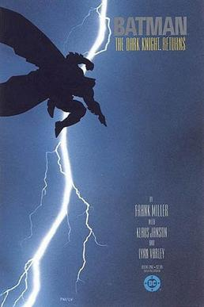

Hobbies
This is the hobbies page, where you can get a glimpse into what I enjoy doing in my spare time. From gaming and creative interests to other personal favourites, everything that defines how I spend my downtime is collected here. I’ve also included some of my favourite games and comics that have influenced what I enjoy.


Gaming
This section highlights my favourite games of all time that have left a lasting impact on me. From open-world adventures to story-driven experiences, these are the games I keep coming back to for their gameplay and creativity. Each one has shaped how I see and enjoy gaming in a different way and inspired to develop games of my own.

1
Grand Theft Auto V
2013
Grand Theft Auto V is the defining video of my life. I have played GTAV for many years growing up and still play it to this day. From the narrative and the insane worldbuilding, this game is truely a one of one. I could argue that this is the game that insired me to start video games of my own. I will never stop loving this video game.
Comic Books
This section is a collection of my favourite comics and graphic stories that I’ve enjoyed over time. These are the ones that stood out to me the most because of their art style, storytelling, and characters. Whether it’s iconic heroes or darker, more grounded narratives, these comics have played a big role in shaping my taste in visual storytelling.



Batman (2016)
Batman (2016) follows Bruce Wayne as he continues his fight against crime in Gotham while dealing with both familiar and new threats. The series explores Batman balancing his role as a symbol of fear for criminals with his growing relationships and responsibilities within Gotham. It focuses heavily on detective work, action, and character-driven storytelling, showing how Batman constantly adapts to an ever-evolving city.